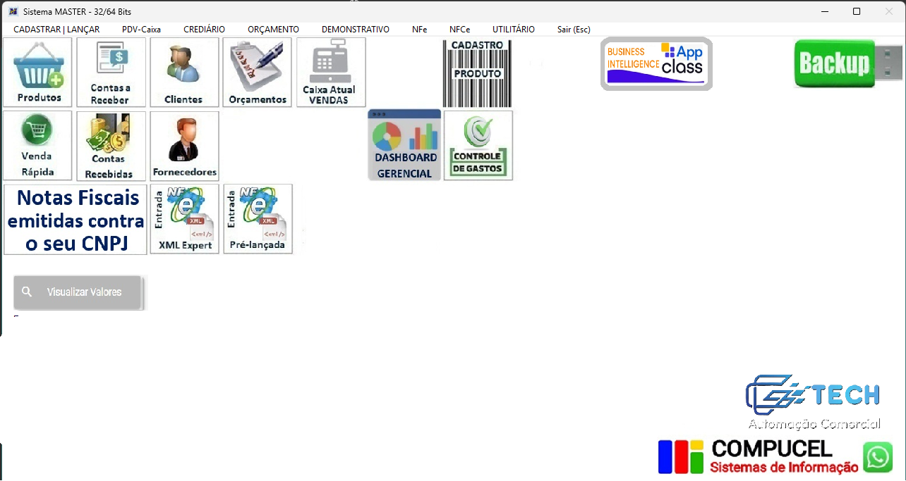

Desenvolvido sob medida pela Gtech, o Gvendi e Gvendi Food simplifica a
operação de vendas e o controle de estoque de comércios que buscam agilidade e escalabilidade no dia a
dia.
Com arquitetura moderna, o sistema permite acompanhar movimentações em tempo real,
integrando frente de caixa com retaguarda administrativa estável e intuitiva.
Sistema Master: Força e Tradição em Gestão Empresarial
Parceria Oficial • Compucel Sistemas

Sistema Master: robustez fiscal desenvolvida pela Compucel.
Como representante autorizada da Compucel Sistemas, a Gtech
leva aos estabelecimentos a solidez e a confiabilidade do Sistema Master,
um ERP completo e homologado para as exigências fiscais mais rigorosas.
O software oferece emissão rápida de documentos fiscais (NFC-e, NF-e, MDF-e), controle
financeiro avançado, conciliação bancária e relatórios gerenciais para tomada de decisão estratégica.
Certificação Digital: Segurança Jurídica e Agilidade
Serviços • Certificadora DigitalEmissão ágil de e-CNPJ e e-CPF para pessoas físicas e jurídicas.
Além dos sistemas de automação, a Gtech atua como certificadora digital, emitindo certificados modelos A1 e A3 para assinatura de contratos, envio de declarações fiscais e emissão de notas com validade jurídica garantida.